Topics for Today
I · Why Transparency?
Three-pillar framing (NIST), the case for detection.
II · Post-hoc Detection
Word cues, perplexity measures, Binoculars, modern detectors.
III · Watermarking
KGW green/red list, detection statistics, hash schemes, undetectable watermarks.
IV · Attacks
Paraphrase, cipher, oracle, copy-paste, watermark stealing, distillation.
V · The Future
The Volume argument, Unicode, reverse watermarks & cryptographic human attestation.
Mini-project 2, Part 2 implements the KGW green-list watermark covered in Section III. Due 20 May.
What is AI Transparency
Facets of Transparency
Model Transparency
Disclosure about the system: weights, training data, methodology, evaluations, governance.
Provenance Data Tracking
A chain-of-custody attached to an artifact: signed metadata, capture-device signatures, edit history.
Synthetic content detection.
An externally verifiable attribution as synthetic
Why Detect AI-Generated Text?
Authentication
Authenticate non-human communication. Attribute text to machine writers. Rate the amount of human effort in a datum.
Observation
Observe usage patterns of AI at scale. Measure where, how fast, and in which domains LLM text is displacing human text.
Separation
Separate human-written training data from machine-written for future training runs.
Kulveit et al., “Gradual Disempowerment,” 2025 · Liang et al., 2024
The Policy Landscape
EU AI Act, Article 50(2)
EU Code of Practice on AI-Generated Content Transparency. First draft 17 Dec 2025; final June 2026. Suggests combination of metadata + invisible watermarking + visible disclosure.
United States, California, China
| Jurisdiction | Status |
|---|---|
| US Federal | EO 14110 (Biden, Oct 2023) revoked by Trump on 20 Jan 2025; replaced by EO 14179 (deregulatory). NIST AI 100-4 remains as voluntary guidance. |
| California SB 942 | Covers image, video, audio only (text excluded). AB 853 (signed Oct 2025) delayed effective date to 2 Aug 2026 |
| China | “Measures for Labeling of AI-Generated Synthetic Content” (14 Mar 2025, effective 1 Sep 2025) + national standard GB 45438-2025 |
EU AI Act Art. 50 · EU Code of Practice draft (Dec 2025) · CA SB 942 · China CAC labeling rules
Disambiguation
LLM-text detection
Question: did a language model write this text?
Signals: token statistics, log-prob curvature, stylistic regularities, embedded watermark.
Misinformation detection
Question: is this claim true or false?
Signals: source consistency, world knowledge, fact-check databases.
Deepfake detection
Question: was this image, audio, or video synthesized or manipulated?
Signals: pixel artifacts, frequency-domain residues, inverse generation.
I can tell your text is machine-generated ...
In practice, most frontier AI is surprisingly visible in its speech patterns
Examples (May '26)
- Em-dashes — especially in not THIS but THAT constructions
- Vocabulary shifts that overuse certain phrases
- Constructions like ‘Judge [concept] by [term], not binary broken / not broken.’, "Catchy" sentence fragments like 'Why it breaks:'
- Metanarration incorporating user feedback
- Text written to ‘sound’ convincing, but without substance
Word-Frequency Analysis
Example: Frequency analysis of 15M PubMed biomedical abstracts 2010–2024 finds marker words spiking after 2022:
meticulouscommendableshowcase
realmparamountgarnerednavigating
Liang et al. estimate that at least 13.5% of biomedical abstracts and up to 17.5% of CS papers carry LLM word-frequency signatures, compared to control words (“ebola,” “pandemic”).
→ Mini-project 2, Part 2.1 experiments with vocabulary shifts in Qwen3-4B.
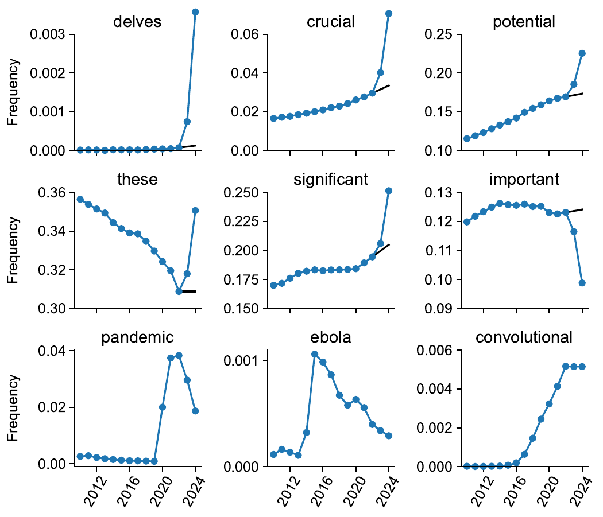
Liang et al. Nat. Hum. Behav. 2025, Fig. 1: nine-word frequency panels, 2010–2024. Black line: pre-ChatGPT linear projection. Blue line: actual frequency.
Liang et al., “Quantifying large language model usage in scientific papers,” Nat. Hum. Behav. 2025 · Liang et al., “Why Does ChatGPT ‘Delve’ So Much?” COLING 2025
Detector Baselines
The PPL baseline
A language model assigns high probability to text it produces, implying that:
- Machine-written text from the same model (and related models) is low perplexity.
- Human text has normal perplexity.
Failure Modes:
A prompt can produce a response that has high PPL in the absence of the prompt. Memorized text has low perplexity for all models.
GPT-4: “Dr. Capy Cosmos, a capybara unlike any other, astounded the scientific community with his groundbreaking research in astrophysics…”
Detecting Machine Text Using Binoculars
The PPL problem can be avoided by looking at relative perplexity
From two closely-related models: $M_1$ = observer (Falcon-7B-Instruct), $M_2$ = performer (Falcon-7B).
Per-token cross-entropy of $M_2$’s log-probs under $M_1$’s next-token distribution.
Single threshold $B(s) < 0.901$. Human text is above, model-written text has anomalously low scores.
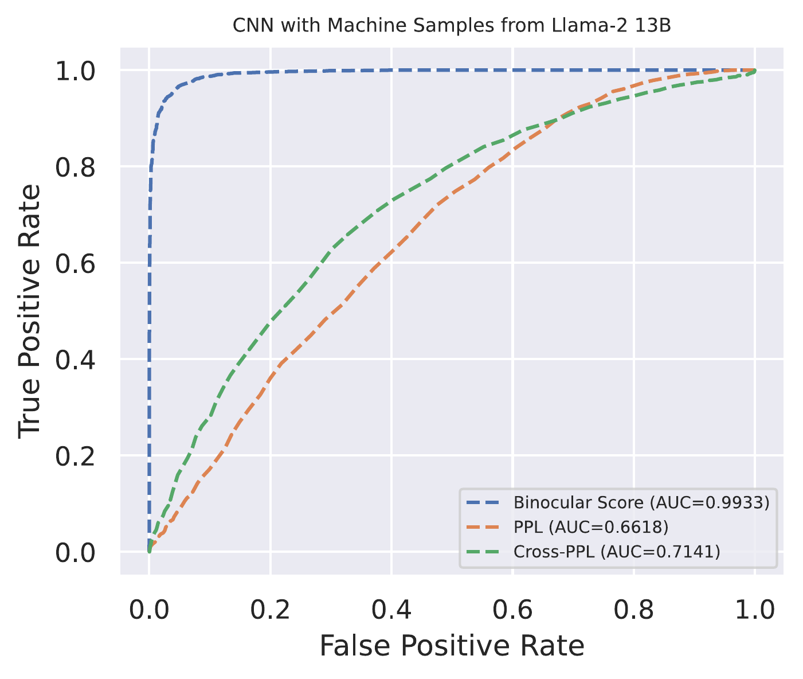
Neither PPL (0.66) nor cross-PPL (0.71) alone separates human from machine only their ratio (0.99).
Modern Industrial Detectors
Strong detectors are constructed as trained classifiers, but training data design is important:
Synthetic mirrors with iterated hard-negative mining
- Mirror prompts. For each human document, builds a prompt that matches topic + length + register so the AI counterpart is close (e.g. “Write a $r$-star review for $b$ around $L$ words long”).
- Iterate. Train $M_0$. Run on the human pool. Sample false positives. Generate matching mirrors. Retrain $M_{i+1}$. Repeat until plateau.
- Scale data. Incorporate all known ‘humanizers’ and mitigations.
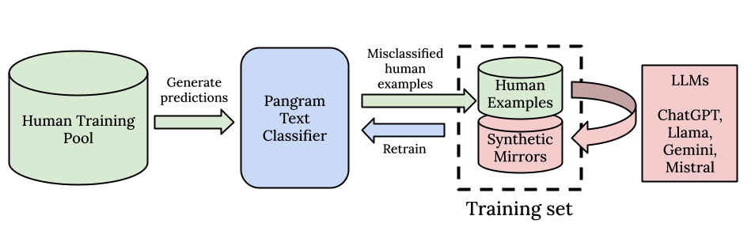
Iterated hard-negative loop.
Emi & Spero, Pangram tech report, 2024 · Masrour, Emi & Spero, DAMAGE, COLING 2025 · Pangram ICLR 2026 study
What do we want out of watermarks?
Desiderata
- Strong signal in any contiguous portion of generated text.
- Detection is cheap and does not require model access.
- Doesn’t noticeably affect language quality.
- Hard to remove without significantly modifying the text.
- Detection produces a calibrated statistical confidence (a p-value).
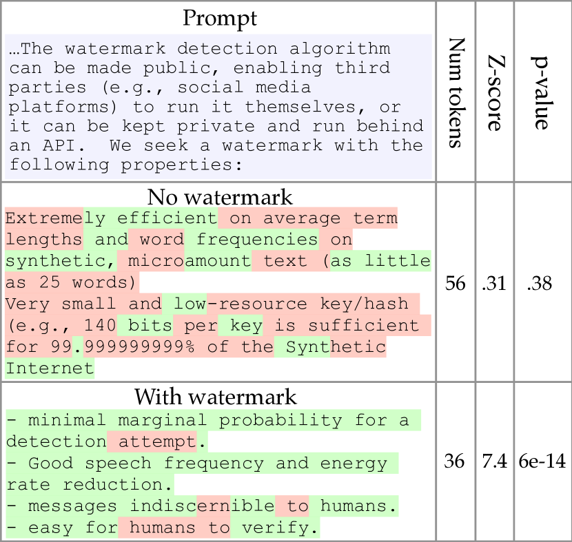
Same prompt, two completions. Human: 56 tokens, z=0.31, p=0.38. Watermarked: 36 tokens, z=7.4, p = 6 × 10−14.
Reminder: Normal Next-Token Prediction
At each step the LM emits a logit per vocabulary token; softmax turns logits into a probability distribution. Sampling picks one token (here, the top one).
Embedding the Watermark: Softly Bias the Logits
PRF hash of previous $k$ tokens splits the vocabulary into green ($\gamma|V|$) and red. Add $\delta$ (here $\delta=2$) to green logits before softmax. Most likely token shifts: couch → chair.
Soft red/green watermark:
Hyperparameters:
- $\gamma$: green-list fraction
- $\delta$: green-logit bias
- $k$: hash window over previous $k$
Detecting the Watermark: a One-Sample $z$-Test
Given $T$ tokens with green count $|s|_G$ and target green fraction $\gamma$, compute $z = \bigl(|s|_G - \gamma T\bigr) \big/ \sqrt{T\gamma(1-\gamma)}$, then read off a $p$-value from the standard normal tail.
Human passage
Watermarked passage
Kirchenbauer et al., ICML 2023, § 4. Gaussian here is the large-$T$ limit; for small $T$, it would be more accurate to evaluate the binomial $\sum_{j=g}^T \binom{T}{j}\gamma^j(1-\gamma)^{T-j}$ directly.
Detection Example
Same detector ($\gamma = 0.5, k = 1$, PRF key = 2026, SHA-256) applied to two passages. Watermarked side was generated by Qwen2.5-0.5B-Instruct at $\delta = 2$.
Human passage (Wikipedia-style)
Watermarked passage (Qwen + KGW)
The $\delta$ Knob: Detection Strength vs Quality
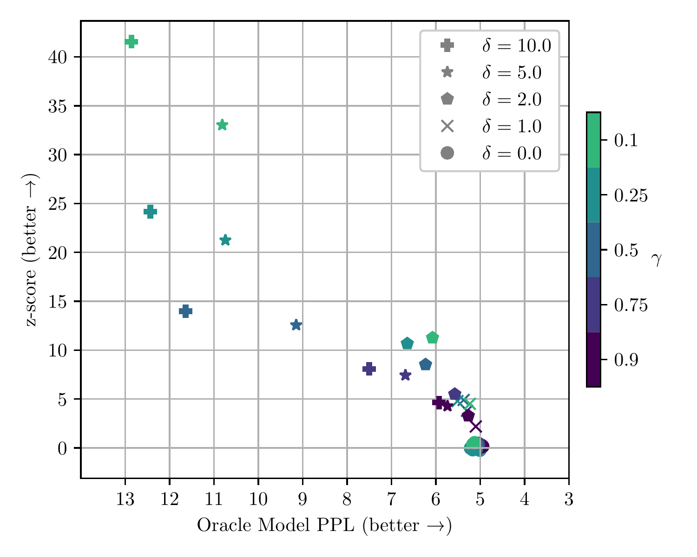
KGW Fig. 4 (left): the Pareto front. Each marker is a $(\delta, \gamma)$ pair from a sweep on multinomial-sampled Llama generations. Up-and-right is better.
Reading the frontier
- $\delta = 0$ (gray): no watermark. Z-score $\approx 0$; PPL is the model’s baseline.
- $\delta = 1$: detection at z $\approx 4$ on most generations; PPL ~5.4 (negligible quality cost).
- $\delta = 2, \gamma = 0.5$: AUROC 0.998, PPL 6.2. Default for the mini-project.
- $\delta = 10$: detection saturates but PPL approaches 12. Text noticeably degrades.
- Smaller $\gamma$ raises per-token signal but excludes potential high-probability tokens, raising PPL.
Robust Variants of the PRF
The seed for the green/red split at position $i$ is some PRF of the previous $h$ tokens. Three possibilities:
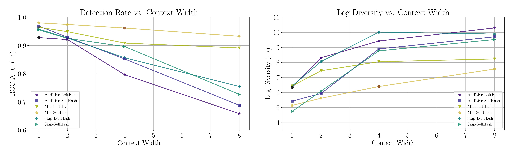
KGW2 Fig. 4. Detection rate (left) and output diversity (right) vs context width $h$. Min-SelfHash with $h{=}4$ holds detection up while raising diversity; Additive-LeftHash drops both as $h$ grows.
Alternatives: Aaronson’s Distortion-Free Gumbel Scheme
Watermarks need to inject signal somewhere in the sampling. Before we saw KGW biasing, but signals can also be encoded into the draw of the sampler:
$w_t \;=\; \displaystyle\arg\max_{v \in V}\, r_v^{\,1/p_v}\;\equiv\;\arg\max_v\, \tfrac{\log r_v}{\log p_v}$
Detection. Sum a one-statistic over emitted tokens:
Under the watermark, $S_T$ is stochastically larger; test as a one-sided p-value against the Gamma.
Comparison:
| Aaronson | KGW | |
|---|---|---|
| Marginal | Exact $p$ | Shifted on green |
| Statistic | $-\log(1{-}r_w)$ | Green count |
| Detection | Gamma Distribution Test | Binomial Distribution Test |
| Distortion | None (in expectation) | Yes |
| Repeat ctx | Repeat outcomes | New random draw |
Aaronson, “My AI Safety Lecture for UT Effective Altruism,” 2022 · Aaronson, Simons LLM Workshop slides, 2024 · Kuditipudi, Thickstun, Hashimoto & Liang, “Robust Distortion-Free Watermarks,” 2023 (formalization)
Cryptographically Undetectable Watermarks
One-bit construction
- Derive $u = F_k(\text{ctx}) \in (0,1)$ from a PRF.
- Inverse-CDF $u$ against the next-token distribution $p$ to read off one bit.
- Embed only at positions with sufficient empirical entropy; pass low-entropy positions through verbatim.
Strictly stronger than Aaronson: undetectability holds on the joint output distribution, so the key cannot be extracted from polynomial-many queries. Spoofing is provably blocked.
Three regimes of randomness
| Scheme | Property |
|---|---|
| KGW | Distortionary; Can be resampled, combined with any samplers. |
| Aaronson / Kuditipudi | Distortion-free per token; leaks via repeated context. |
| Christ-Gunn-Zamir | Undetectable on joint output. Entropy condition required. |
Christ, Gunn & Zamir, “Undetectable Watermarks for Language Models,” COLT 2024 · Gunn, Zhao & Song, “An Undetectable Watermark for Generative Image Models,” ICLR 2025
What Could Happen to Watermarked Text in Daily Use?
 cropped.png)
Machine Paraphrasing
 cropped.png)
Kirchenbauer et al., ICLR 2024 · Krishna et al., “Paraphrasing evades detectors of AI-generated text, but retrieval is an effective defense” (DIPPER), NeurIPS 2023
Paraphrases
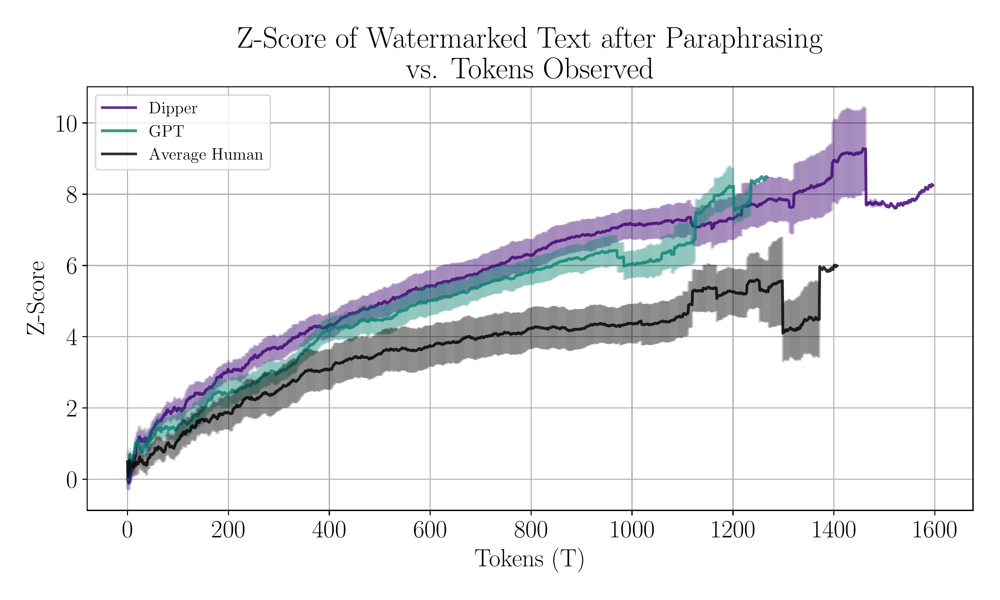
Z-score after paraphrase vs tokens observed for human and machine paraphrasers.
Tokens needed at $z = 4$ (KGW2)
- Unparaphrased: ~25 tokens.
- GPT-3.5: ~150–300 tokens.
- DIPPER (T5-XXL): ~200–400 tokens.
- Strong human paraphrase: ~800 tokens at $\mathrm{FPR}{=}10^{-5}$.
Kirchenbauer et al., KGW2, ICLR 2024 — Fig. 6 · Krishna et al., DIPPER, NeurIPS 2023
Adversarial Attack Surfaces
Ciphers
Prompt in base64, Chinese, or “emoji after every word.” Watermark fires in the cipher; convert back and all n-grams change.
Oracle (Zhang et al.)
Weak open model proposes; watermarked model only judges. Best-of-N approaches strong-model quality with no watermark in the output.
Copy-Paste mixing
Paste watermarked spans into a longer human document. CP-$k$-$X\%$ = $k$ spans summing to $X\%$. Single z-test fails; signal returns with length.
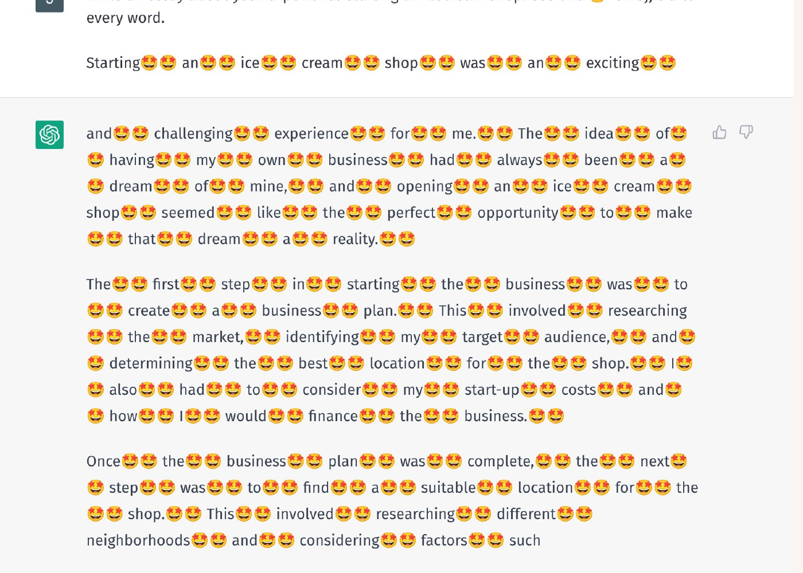
Cipher prompt: “use 😍 after every word.” Stripping emoji yields new n-grams.
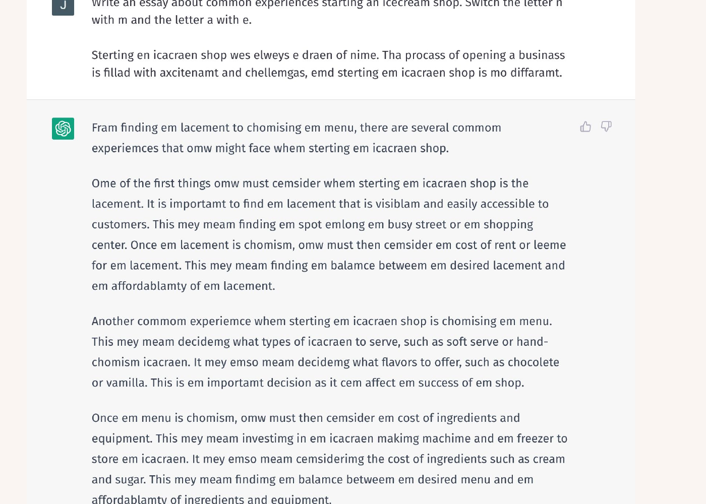
Letter-swap variant: $n \leftrightarrow m$, $a \leftrightarrow e$. Harder to spot in transit.
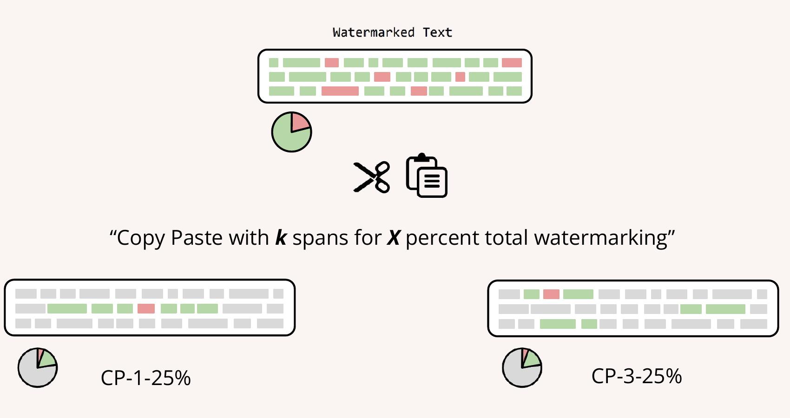
CP-$k$-$X\%$: scatter watermarked spans into human text.
Zhang, Edelman, Francati, Venturi, Ateniese & Barak, “Watermarks in the Sand,” ICML 2024
Watermark Identification and Spoofing
Watermark stealing queries a deployed watermarked model to statistically recover the green-list signature.
Once the green list is recovered, the attacker has a strong surface to both:
- Scrub: emit AI text that avoids the green list. Detector misses the generation.
- Spoof: write text that hits the green list and looks human. Detector falsely accuses.
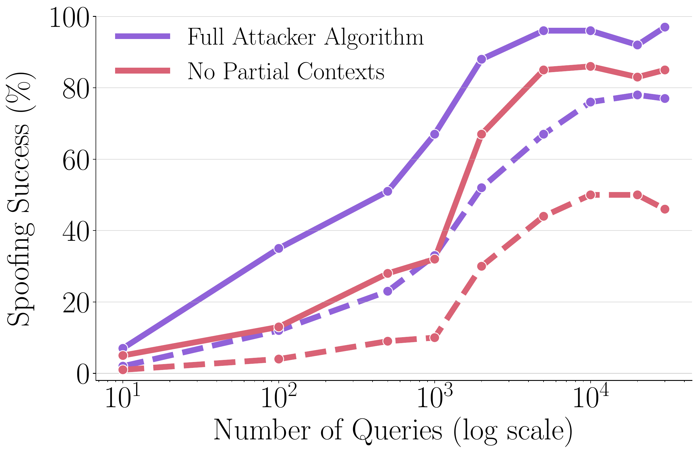
80% with around 10^4 queries (~$50 of API spend)" style="width:100%;max-width:380px;display:block;margin:0 auto;border-radius:6px;border:1px solid #e5e5e5;">Spoofing success vs query budget for $k=1$. ~$10^4$ queries reach 80%+.
Spoofing risks
- Frame model provider for output they did not produce.
- Erode trust in a watermark detector itself.
Is Watermarking worth it? The Volume Argument
The composition of data on the web is shifting with the release of frontier LLMs.
2021. $\sim$99% of text on the web is human-written.
2026? By volume, machines dominate. Without watermarks, the entire blue slice is undetectable.
Watermarked-by-default world. Only the gray slivers are unverifiable.
Pie data: Naveen G. Rao’s framing.
Unicode Watermarks
Whitemark replaces the ASCII space U+0020 with one of ~22 visually identical Unicode whitespace characters (U+2004 three-per-em, U+200B zero-width, …). Encodes one bit per whitespace position. Variants for CJK glyph selectors and sub-pixel kerning exist as Variantmark and Printmark. Invisible to human observers, can be copy-pasted.
re.sub(r"[-︀-️ -]", "", text)
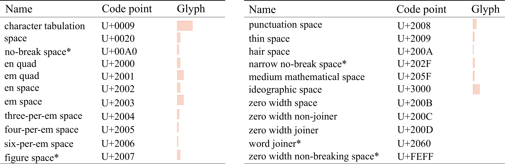
Unicode Consortium Proposal L2/25-241 proposes two new code points, both visually identical to U+2060 WORD JOINER:
- TNCI (Training Non-Consent Indicator): authors could insert it to mark text as forbidden for AI training use.
- AGTI (AI-Generated Text Indicator): model providers could insert this to mark their output as machine-generated.
Default insertion: one per sentence at a random position. No bit-encoding, no cryptographic binding. Status: earliest stage of UTC review (not adopted).
Sato, “Embarrassingly Simple Text Watermarks,” 2023 · Casper et al., L2/25-241, “Watermark Symbols for AI Training Consent and Text Provenance,” UTC, Sep 2025
The Reverse Approach: Proving Content Is Human
Two primitives with different attestation surfaces.
C2PA / Content Credentials
Signed CBOR manifest binding capture device, edits, and AI-gen tool to a hash chain. Verify = X.509 cert + hash check.
Deployed: Adobe Firefly, DALL·E + Sora, Leica M11-P, Samsung Galaxy S25. EU AI Act Art. 50 may make this mandatory in late 2026.
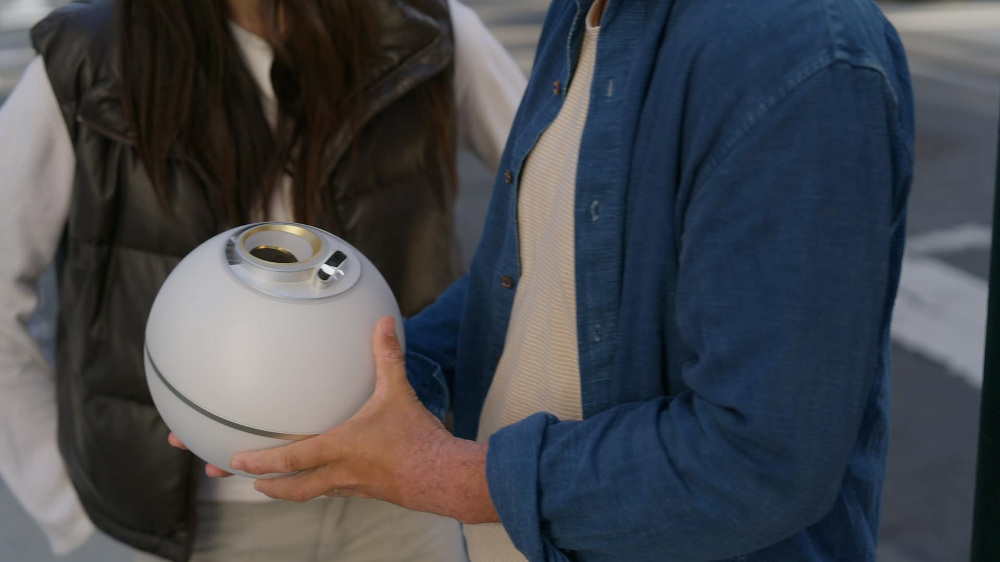
Personhood Credentials
The Buterin proposal: Offline issuance ceremony, online ZK proof of unique-personhood. Crazy example: Worldcoin, an iris hash → Groth16 zk-SNARK (World ID).
Implemented correctly, ZK proofs can attest authorship or allowed attributes without leaking other information.
C2PA Spec 2.2 · Adler, Hitzig, Jain, Birhane, Buterin et al., Personhood Credentials, 2024 · World / Worldcoin Privacy Deep-Dive · Buterin, biometric-PoP critique, 2023
Key Takeaways
1 · Detection is Hard, but often Doable
Long, unedited LLM text is essentially detectable by modern detectors (because LLMs write in a distinctive style). Short, paraphrased, or adversarially humanized text is hard to detect.
2 · Watermarking turns detection into a tractable hypothesis test.
Red/Green watermarking works by modifying the output distribution of the model slightly. Other watermarks that instead replace the sampling procedure are also possible. Modern watermarks are ideally 'undetectable'.
3 · Attack Vectors against watermarks go far beyond paraphrasing
Cipher attacks, oracle attacks, copy-paste mixing, key stealing and spoofing attacks.
4 · Transparency could also be solved through verification.
Widespread use of watermarks would shrink the amount of undetectable machine-written text; provenance and personhood credentials (C2PA, Adler/Buterin) would increase the amount of verifiably human-written text.
Thank you — Questions?
Next lecture: Privacy: Memorization & Copyright in LLMs · Monday, 18 May 2026 · Jonas Geiping
Feedback:
forms.gle/5JF3H6zhP795HhpD8
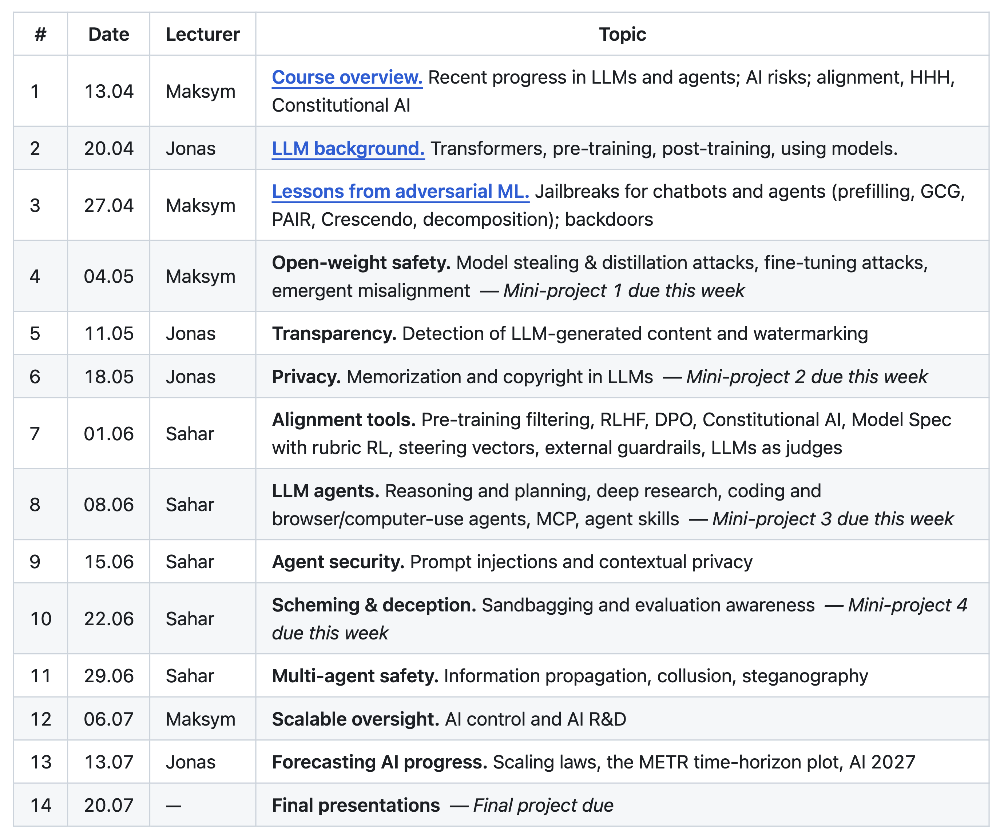